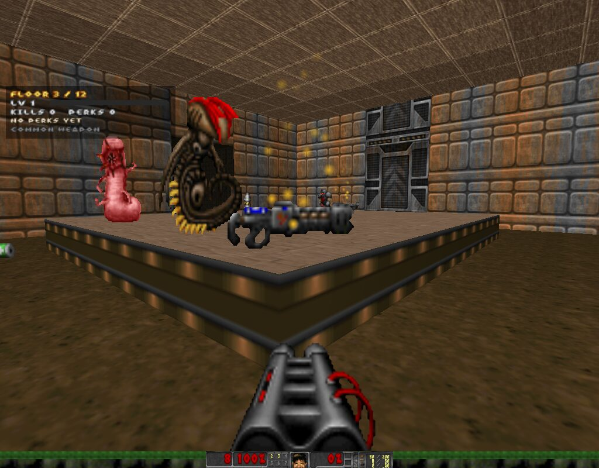
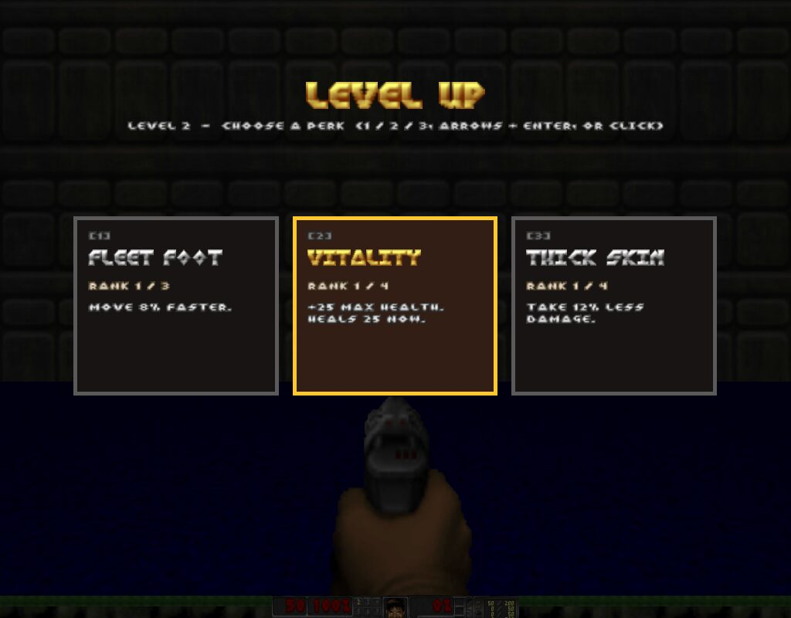
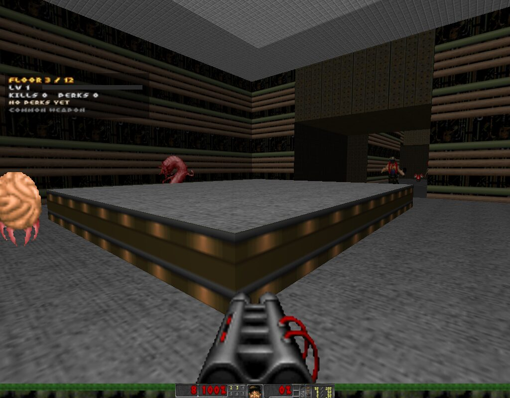
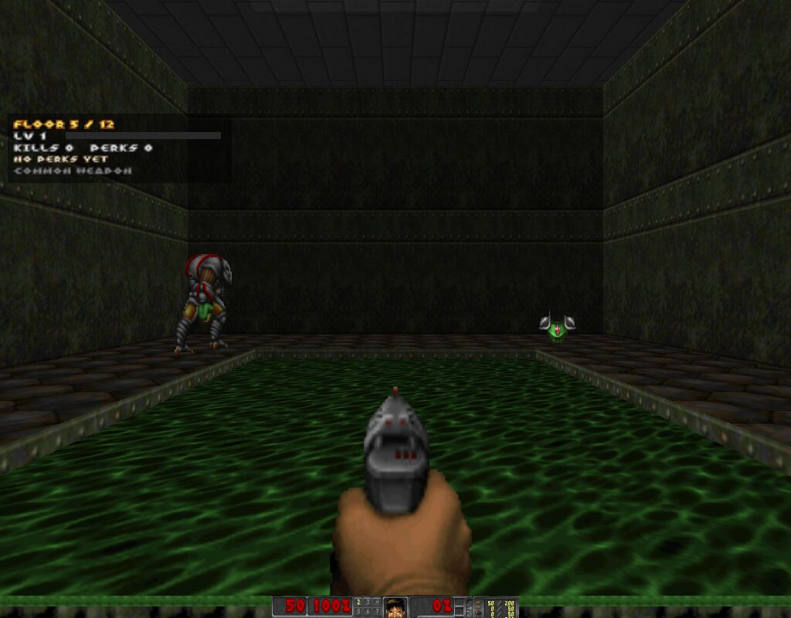
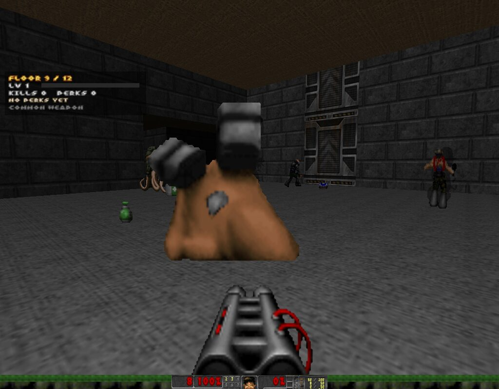
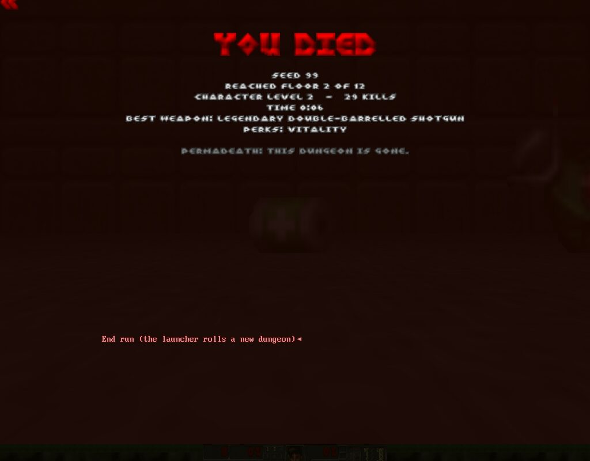
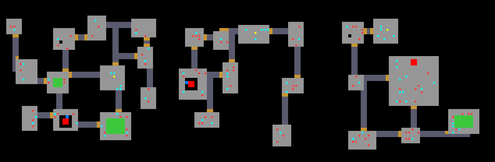
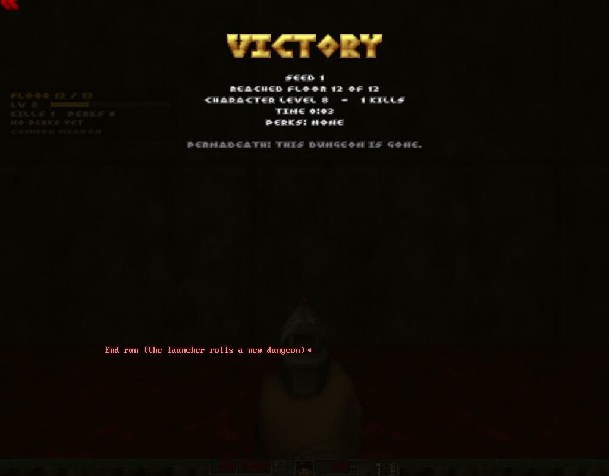

Doom, but every run is a brand-new dungeon. One life.
12 procedurally generated floors, perks on every level-up, weapons that roll rarities, and a boss waiting at the bottom. Free, built on GZDoom and Freedoom.

Every run builds 12 new floors: rooms, corridors, doors, pillars, platforms and toxic pools. The exit sits in a locked vault; find the keycard first.
Kills give XP. Every level-up pauses the game and offers three perks. 13 perks, most stack. Build a vampire, a glass cannon, or a walking tank.
Weapons roll Common to Legendary, with bonus damage, crits and lifesteal. Rare drops glow in their color.
One life. Die and the dungeon is gone, and the next run is a new one. Beat the Cyberdemon on floor 12 to win.






Unzip, double-click, play. The first launch downloads the GZDoom engine and the free Freedoom assets (about 50 MB) into a data folder next to the game.
DoomRogue-windows.zip somewhere like Documents\DoomRogue.DoomRogue.exe.DoomRogue-mac-linux.zip.DoomRogue.command → Open → Open. This is only needed the first time, because the file isn't signed..deb).DoomRogue-mac-linux.zip.python3 doomrogue.py--engine /path/to/gzdoom.--seed 1234. The seed is on the death screen. Difficulty: --skill 1–5.Each level-up offers three random perks you haven't maxed out. Rare glowing perk shards dropped by monsters give an extra pick.
| Perk | Effect (per rank) | Max |
|---|---|---|
| Brute Force | +15% damage with all weapons | 5 |
| Thick Skin | Take 12% less damage | 4 |
| Vampirism | Heal for 4% of all damage you deal | 3 |
| Vitality | +25 max health, and heals 25 right away | 4 |
| Fleet Foot | Move 8% faster | 3 |
| Regeneration | Slowly regenerate health up to 60% of max (faster per rank) | 3 |
| Keen Eye | +8% chance to crit for 2.5× damage | 4 |
| Adrenaline | Every kill heals 3 health | 3 |
| Volatile Corpses | 12% chance a kill explodes and hurts nearby monsters (never you) | 3 |
| Scavenger | Monsters drop loot more often (+10% per rank) | 3 |
| Treasure Hunter | Weapons roll higher rarities | 3 |
| Armorer | +25 armor at the start of each floor | 3 |
| Quartermaster | Restock 20% of every ammo type at the start of each floor | 2 |
Every weapon you find rolls a rarity, and it glows in that color. Deeper floors and the Treasure Hunter perk roll better. Weapons dropped by monsters roll a bit worse.
| Rarity | Bonuses for that weapon |
|---|---|
| Common | none |
| Uncommon | +8–14% damage |
| Rare | +15–25% damage, +4–7% crit |
| Epic | +25–35% damage, +7–10% crit, 2–3% lifesteal |
| Legendary | +40–55% damage, +10–14% crit, 3–5% lifesteal |
Found a duplicate? You keep the best of each stat plus +3% damage. Monsters also drop ammo for weapons you own, plus health and armor bonuses.

Kill the Cyberdemon, step on the gate, see this. Good luck.
DoomRogue.command → Open → Open. You only need to do this once. If it complains about python3, run xcode-select --install in Terminal and try again.data/last_run.log next to the game and look at the last lines. On Windows, make sure your graphics drivers are up to date (GZDoom needs OpenGL 3.3 or Vulkan). Then open an issue on GitHub and attach that log.--iwad path/to/doom2.wad (from a terminal, or a shortcut with that argument).data folder next to the game: the engine, Freedoom, generated dungeons, saves and logs. To uninstall, delete the DoomRogue folder.data/last_run.log.dr_gen.py: the level generator. Pure Python, writes UDMF maps into a WAD.mod/scripts/*.zs: ZScript for XP, perks, loot, HUD, menus and permadeath.doomrogue.py: the launcher (seed → generate → play → repeat).